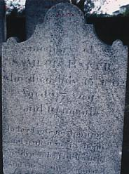
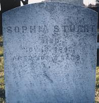

|
|
If anyone has information regarding the parents of Timothy BAKER [Sr.], or the name of (#2) Samuel BAKER's wife, please contact me.
Timothy BAKER [Sr.] [#1 below] may be the same person as a Timothy BAKER b. about 1680 of Southampton, Long Island, NY, and mar. to Susannah MATTHEWS. However, I have not seen any primary evidence to support this. If anyone has information about this Long Island, NY, BAKER family, please contact me.
(1) Timothy BAKER [Sr.], b. about ca. 1680 place unknown, d. 1747 in Maidenhead Twsp., Hunterdon Co., NJ; m. to Susannah ____ (b. unknown); they resided in Maidenhead Twsp. [now Lawrence Twsp.], Hunterdon Co. [now Mercer Co.], NJ; their children:
[#2] i. Samuel, b. 1705, d. 15 Jul 1802;
ii. Mary, b. about 1707, m. David HOWELL;
iii. Timothy [Jr.], b. about 1720, d. 1794, m. Deborah ____;
iv. Mathias, b. unknown, d. 1788;
v. Thomas, b. unknown;
vi. Grace, b. unknown, m. Mr. COLMAN;
vii. Ruth, b. unknown.
 |
(2) Samuel BAKER, b. 1705 probably in NJ, d. 15 Jul 1802 in Kingwood Twsp., Hunterdon Co., NJ; the name of his wife is unknown; he resided in Hopewell Twsp., Hunterdon Co. [now Mercer Co.], NJ, and later near Rosemont in Kingwood Twsp., Hunterdon Co., NJ; his children:
i. Susannah, b. 1733, d. 1824, m. Isaac RITTENHOUSE;
[#3] ii. Sophia, b. 1740, d. 3 Nov 1843, m. 1st George OPDYCKE,
m. 2nd David STEWART;
iii. Mary, b. unknown, m. Morris WOOLVERTON;
iv. Elizabeth, b. unknown, m. Levy KETCHAM;
v. Abigail, b. unknown, m. Mr. BARNS;
vi. Rachel, b. unknown, m. Thomas STEVENSON.
 |
(3) Sophia BAKER, b. 1740 in Hopewell Twsp., Hunterdon Co., NJ, d. 3 Nov 1843 in Hunterdon Co., NJ; m. 1st to George OPDYCKE (b. about 1743, d. 1795).
Sophia BAKER m. 2nd, 1797 in Baptistown Church, Hunterdon Co., NJ, to David STEWART.

This page maintained by Jack D. Mount
Last updated:
29 May 2006
 Return to top of page
Return to top of page
Return to
Genealogy Resources Page
Return to first page of Jack
Mount's Home Place
 | |
BAKER Genealogy & Family History NetRing | |
 | |
Mercer County, New Jersey Genealogy & History Webring | |
 | |
Ancestors NetRing | |
[ Previous 5 Sites | Skip Previous | Previous | Next ]
This RingSurf [ Skip Next | Next 5 Sites | Random Site | List Sites ] |
 [
Previous 5 Sites |
Skip Previous |
Previous |
Next
] [
Previous 5 Sites |
Skip Previous |
Previous |
Next
] This RingSurf Connect With Surnames Genealogy Directory Webring Net Ring site [ Skip Next | Next 5 Sites | Random Site | List Sites ] |
|---|